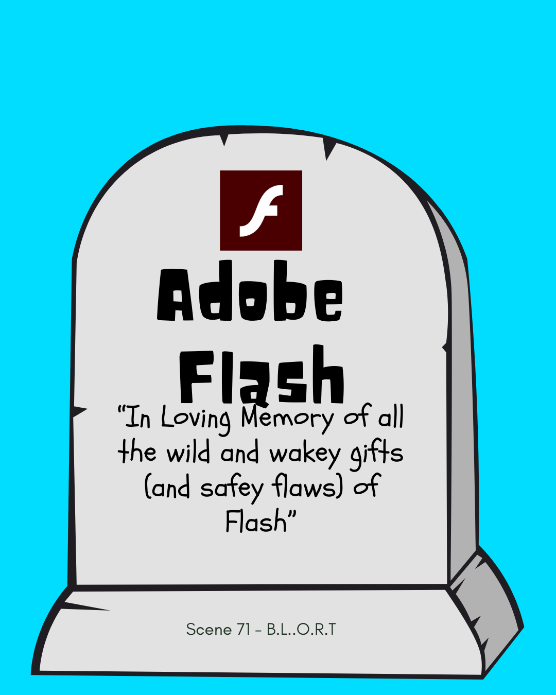
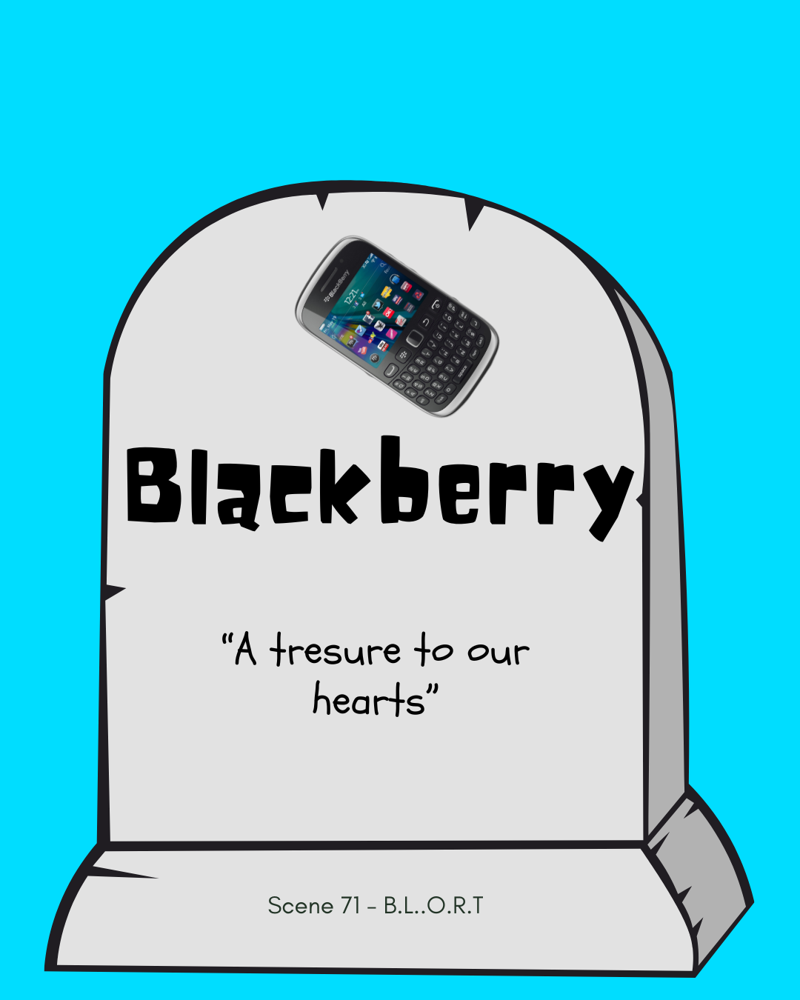

Welcome to Scene 71 - B.L.O.R.T
What does B.L.O.R.T stand for, you may ask?
"Broken Land of Relic Tech"
A lush graveyard for heroes of the past; games, devices, startups that have been berried long ago


